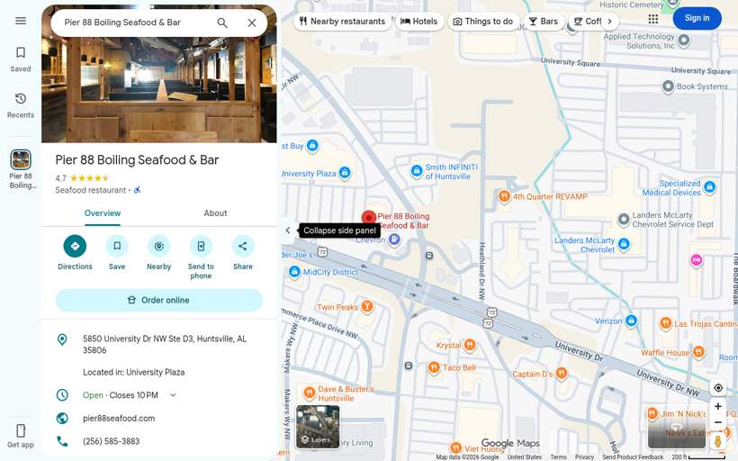
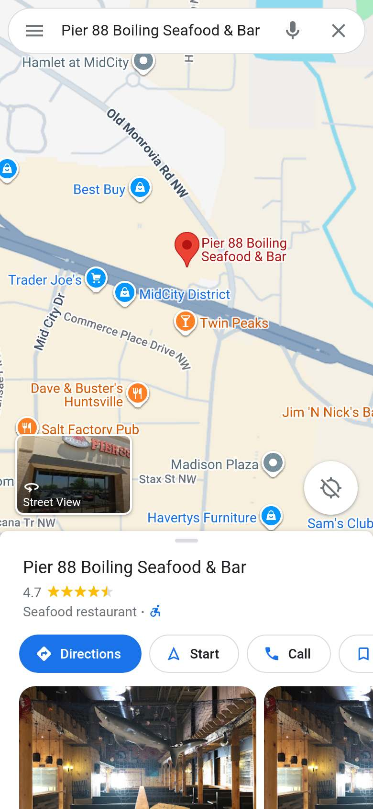
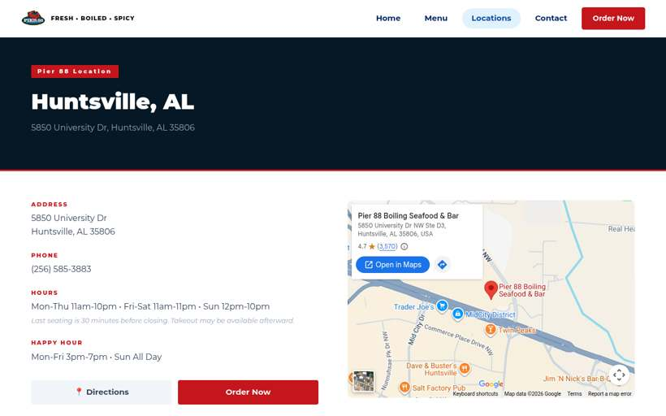
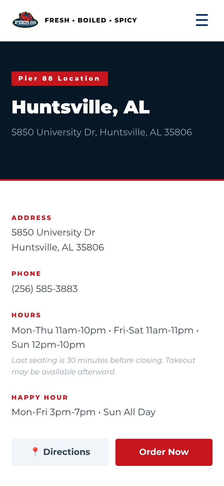
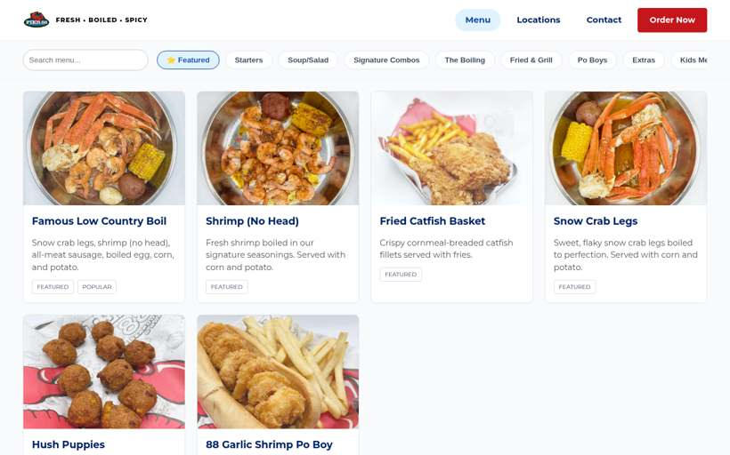
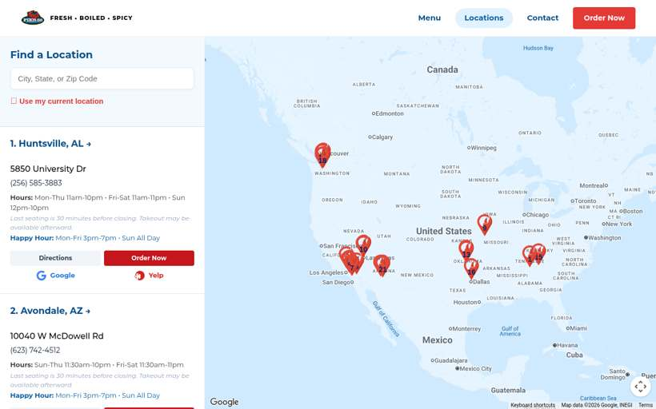

Pier 88 Boiling Seafood & Bar
United States · 4 photos · tap for source
🛋️ Fit-out2 photos · ← → / swipe / tap to enlarge


🦞 Food2 photos · ← → / swipe / tap to enlarge


⚑ Highlightsflagged for Seb · sourced
- Where15 sites found on Google Maps (lower bound)Redstone Arsenal, Alabama · checked Google Maps sweep 20 Oct 2026 locations ↗
- NZ/AUUnknown
- LookWhat stands out in the photosrustic timber (2) · buckets/pails (2) · paper-covered tables (1) · booth seating (1) · boil-in-a-bag (1) · tipped onto paper (1) · gloves + bibs (1) Source: CLIP tags, attrs.json
- Photos2 fit-out · 2 food · 0 otherTap any photo caption for its source page.
📍 15 sites found on Google Maps (lower bound) (Google Maps sweep 20 Oct 2026)Unknown
Listing & website

Google listing · desktop
Google listing · phone
Website · home
Website · home · phone
Website · menu
Website · locations📍 15 branches found on Google Maps (20 Oct 2026, lower bound)
- Pier 88 Boiling Seafood & Bar Redstone Arsenal, 5850 University Dr NW Ste D3 · ★4.7 (3,569)
- Pier 88 Boiling Seafood & Bar Avondale Tolleson, 10040 W McDowell Rd · ★4.5 (1,550)
- Pier 88 Boiling Seafood & Bar Mesa Mesa, 945 N Dobson Rd · ★4.3 (771)
- Pier 88 Boiling Seafood & Bar Independence Raytown, 11825 E US Hwy 40 D · ★4.2 (2,439)
- Pier 88 Boiling Seafood & Bar Las Vegas Spring Valley, 5825 Spring Mountain Rd · ★4.6 (2,856)
- Pier 88 Boiling Seafood & Bar North Las Vegas North Las Vegas, 865 W Craig Rd · ★4.1 (905)
- Pier 88 Boiling Seafood & Bar Rainbow Spring Valley, 2080 N Rainbow Blvd · ★4.2 (872)
- Pier 88 Boiling Seafood & Bar OKC Moore, 2125 W I-240 Service Road · ★4.2 (2,669)
- Pier 88 Boiling Seafood & Bar The Village The Village, 2119 W Britton Rd · ★3.7 (704)
- Pier 88 Boiling Seafood & Bar Chattanooga East Brainerd, 2288 Gunbarrel Rd #130 · ★4.3 (2,313)
- Pier 88 Boiling Seafood & Bar Dallas Richardson, 10560 Walnut St #100 · ★4.7 (498)
- Pier 88 Boiling Seafood & Bar Lynnwood Alderwood Manor, 3015 184th St SW · ★4.5 (1,091)
- Pier 88 Boiling Seafood & Bar Tukwila Tukwila, 17380 Southcenter Pkwy · ★4.5 (1,472)
- Pier88 Boiling Seafood & Bar Issaquah, 1151 NW Sammamish Rd Suite 103 · ★4.9 (244)
- Pier 88 Boiling Seafood & Bar Snohomish Fobes Hill · ★4.7 (125)